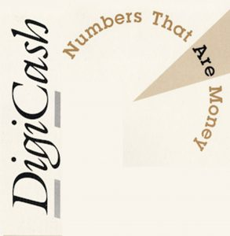
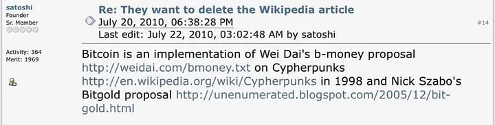
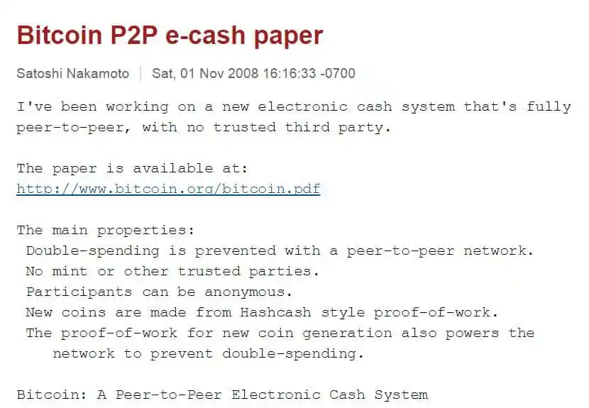
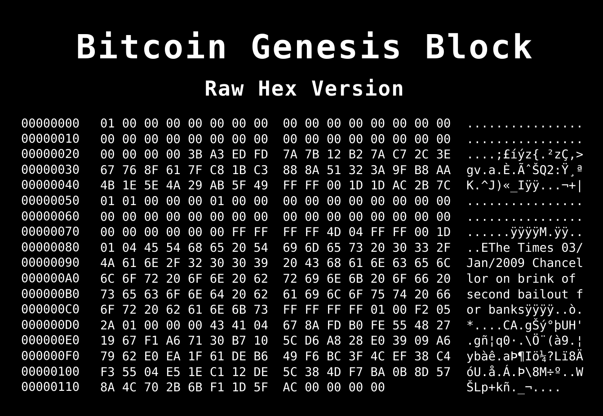
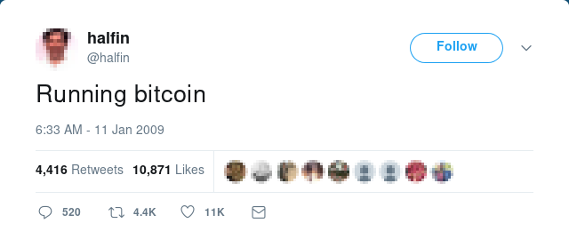
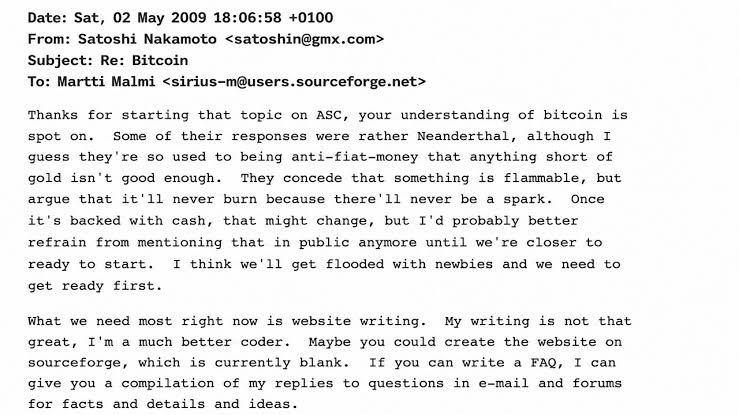
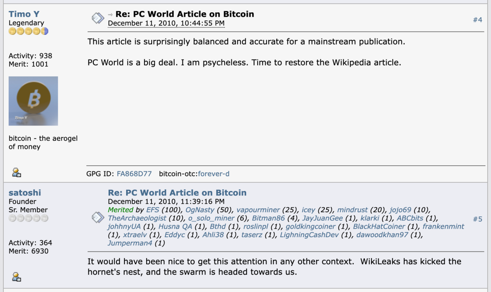
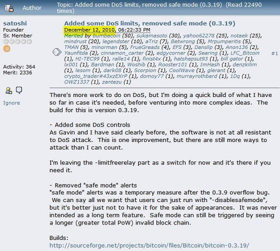
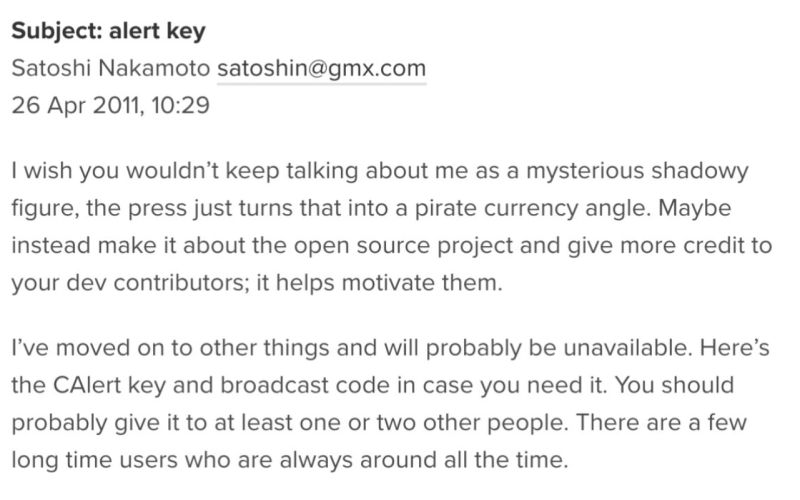

Vznik Bitcoinu
Základní návrh Bitcoinu zveřejnil 31. října 2008 autor vystupující pod pseudonymem v dokumentu Bitcoin: A Peer-to-Peer Electronic Cash System. Popsal v něm systém elektronických peněz, který měl umožnit provádění plateb přímo mezi dvěma stranami bez nutnosti využívat důvěryhodnou finanční instituci [1, 2].
Bitcoinová síť byla spuštěna 3. ledna 2009 vytvořením tzv. . Na vývoji softwaru se postupně začali podílet další programátoři a Satoshi Nakamoto se na přelomu let 2010 a 2011 začal z veřejného působení stahovat. Během roku 2011 jeho známá komunikace s dalšími vývojáři skončila [1, 3].
Bitcoin však nevznikl z ničeho. Navazoval na několik desetiletí vývoje , počítačových sítí, digitálních plateb a pokusů o vytvoření elektronických peněz. Řada prvků, které později Satoshi spojil do jednoho systému, existovala v nějaké podobě již dříve. Pro pochopení toho, co Bitcoin přinesl nového, je proto užitečné nejprve se podívat na projekty a myšlenky, které mu předcházely [1, 4, 5].
Při historickém hodnocení je užitečné rozlišovat mezi dobovými primárními prameny a pozdější interpretací. U událostí spojených přímo se Satoshim mají největší váhu , původní mailing-listové zprávy, rané verze programu a dochovaná komunikace; odborné knihy a historické práce pomáhají zasadit tyto prameny do širšího kontextu [6, 7, 1, 3].
Předchůdci Bitcoinu
Pokusy vytvořit peníze použitelné v digitálním prostředí začaly dlouho před Bitcoinem. Jejich autoři řešili různé části stejného obecného problému: jak elektronicky převádět hodnotu, jak ověřovat vlastnictví, jak chránit transakce před paděláním, jak zachovat soukromí uživatelů a především jak zabránit tomu, aby bylo možné stejnou digitální hodnotu utratit vícekrát [1, 4].
Jednotlivé projekty se přitom výrazně lišily. Některé zachovávaly banku nebo jiného centrálního vydavatele, ale snažily se zvýšit soukromí plateb. Jiné experimentovaly s digitálním zlatem, výpočetní prací nebo distribuovanou evidencí. Žádný z nich ale před rokem 2009 nevytvořil fungující systém, který by současně umožňoval převádět vlastní digitální jednotku a udržovat její historii bez jediného centrálního správce [1, 4, 5].
David Chaum, eCash a DigiCash
Jednou z nejdůležitějších osob v rané historii digitálních peněz byl . Už na začátku 80. let se zabýval otázkou, jak používat elektronické platební systémy, aniž by jejich provozovatel získával úplný přehled o tom, kdo, komu a za co platí. V roce 1983 publikoval práci o takzvaných , tedy slepých podpisech, a v následujících letech své myšlenky dále rozpracovával směrem k elektronické hotovosti [4, 8].
Princip byl na svou dobu pozoruhodný. Uživatel mohl z banky získat elektronickou obdobu bankovky – unikátní digitální údaj opatřený podpisem banky. Pomocí slepého podpisu bylo možné zařídit, aby banka potvrdila platnost této digitální bankovky, aniž by později dokázala jednoduše spojit konkrétní platbu s okamžikem, kdy si ji uživatel vybral. Obchodník mohl přijatou elektronickou bankovku následně předložit vydávající bance, která ověřila její platnost a současně zkontrolovala, že již nebyla použita dříve [4].
Chaumovy myšlenky později získaly praktickou podobu ve společnosti a systému . Technologie se dostala z akademických prací do skutečných experimentů s bankami a ukázala, že digitální hotovost chránící soukromí uživatelů nemusí být pouze teoretickým konceptem [1, 4, 8].
eCash však stále potřeboval centrálního vydavatele. Banka vytvářela a přijímala digitální bankovky a její evidence byla nutná také k tomu, aby stejná bankovka nemohla být úspěšně utracena opakovaně. DigiCash tedy významně omezoval množství informací, které provozovatel o platbě získával, ale neodstraňoval samotnou potřebu důvěryhodné instituce [1, 4].
Společnost DigiCash se navíc nedokázala komerčně prosadit a v roce 1998 zkrachovala. S jejím koncem skončila i tato konkrétní cesta k širšímu rozšíření elektronické hotovosti. Pro další členy kryptografické komunity šlo o důležitou zkušenost: ochrana soukromí pomocí kryptografie a odstranění centrálního bodu systému jsou dva různé problémy. DigiCash dokázal výrazně posunout první z nich, ale ten druhý nevyřešil [1].
Chaumův článek o slepých podpisech z roku 1983 je důležitý i proto, že ukazuje, jak lze oddělit ověření platnosti digitální hodnoty od úplné znalosti identity a platební historie uživatele. Právě tato vlastnost se stala jedním ze základních stavebních kamenů pozdějších úvah o soukromé elektronické hotovosti [9, 4].

Digitální zlato a e-gold
Vedle kryptografické elektronické hotovosti vznikaly v 90. letech také systémy, které se nesnažily vytvořit úplně novou peněžní jednotku, ale převést do digitální podoby vlastnictví existujícího aktiva. Nejvýznamnějším příkladem byl , spuštěný v roce 1996 a jeho spolupracovníky [5, 10].
Uživatelé e-gold vedli své zůstatky v jednotkách odpovídajících určitému množství drahého kovu. Zlaté účty byly podle provozovatele plně kryty fyzickými zlatými slitky a převod mezi dvěma uživateli znamenal změnu evidence vlastnictví příslušného množství zlata. Hodnotu tak nebylo nutné fyzicky přepravovat – převáděla se prostřednictvím internetu [10].
Na rozdíl od mnoha předchozích experimentů získal e-gold skutečně rozsáhlé používání. Kolem roku 2006 systém zpracovával desítky tisíc převodů denně a objem transakcí dosahoval více než dvou miliard dolarů ročně [5, 10].
S růstem však přicházely i problémy. Systém využívali také pachatelé podvodů a další trestné činnosti, provozovatel čelil problémům s identifikací zákazníků a pravidly proti praní špinavých peněz a kolem služby vznikaly také bezpečnostní problémy a podvody. Americké úřady v roce 2007 obvinily společnost a její představitele mimo jiné v souvislosti s provozováním neregistrované služby pro převod peněz. V následujícím období došlo k odsouzením, omezení provozu a nakonec také k vypořádání zlatých rezerv [5, 10].
Pro historii Bitcoinu je e-gold důležitý především jako praktická ukázka rozdílu mezi digitálními penězi a decentralizovanými digitálními penězi. Převádět hodnotu po internetu bylo možné dávno před Bitcoinem. Dokud však existoval jeden provozovatel, centrálně vedené účty a fyzická rezerva spravovaná konkrétní organizací, existovalo také místo, jehož selhání nebo odstavení mohlo ovlivnit celý systém.
Cypherpunks a hledání digitální hotovosti
Otázkami digitálního soukromí, kryptografie a závislosti na centrálních institucích se od počátku 90. let intenzivně zabývala komunita označovaná jako . Nešlo o jednotnou organizaci ani o skupinu s jedním politickým programem. Byla to volně propojená komunita kryptografů, programátorů a aktivistů, která komunikovala především prostřednictvím internetových mailing listů [1, 5, 11].
Jedním z jejích hlavních témat bylo soukromí v prostředí, v němž se stále více komunikace a obchodních transakcí přesouvalo do digitální podoby. Finanční transakce byly obzvlášť citlivé: zatímco fyzickou hotovost lze předat druhému člověku bez vytvoření záznamu u banky nebo karetní společnosti, běžná elektronická platba obvykle vyžaduje prostředníka, který transakci vidí a eviduje [1].
Část cypherpunků proto hledala způsob, jak vytvořit elektronickou obdobu hotovosti. Cílem nebylo jen převést existující bankovní systém na internet, ale využít kryptografii k omezení množství důvěry, kterou musí uživatelé vkládat do provozovatelů systému.
Právě zde se ale objevoval zásadní technický problém. Digitální data lze velmi snadno kopírovat. Pokud by digitální peníze nebyly spravovány centrální bankou nebo serverem, kdo rozhodne, zda už uživatel stejnou jednotku neutratil někde jinde? Odstranit centrálního prostředníka znamenalo současně najít jiný způsob řešení .
Programové vyjádření tohoto přístupu formuloval v textu A Cypherpunk’s Manifesto z roku 1993. Soukromí v něm nevystupovalo jako vlastnost udělená provozovatelem služby, ale jako něco, co má být chráněno prostřednictvím kryptografie a systémového návrhu [12, 11].
Časová razítka a řetězení záznamů
Vývoj Bitcoinu neovlivňovaly pouze pokusy o digitální peníze. Důležitá byla také práce kryptografů zabývajících se tím, jak prokázat existenci a pořadí digitálních dokumentů.
Na začátku 90. let publikovali a práce o kryptografickém (časovém razítkování) digitálních dokumentů. Jejich cílem nebylo vytvořit peníze, ale znemožnit nebo alespoň snadno odhalit zpětnou změnu elektronického záznamu. Jednotlivé záznamy bylo možné kryptograficky propojit tak, aby manipulace se starším záznamem ovlivnila i návaznost těch pozdějších [2, 8].
Tato větev vývoje je pro Bitcoin důležitá, protože ukazuje, že ani myšlenka kryptograficky propojené historie nevznikla až v roce 2008. ve přímo odkazoval na práce Habera, Stornetty a jejich spoluautorů. Bitcoin však tuto myšlenku použil v jiném kontextu – jako součást distribuované historie peněžních transakcí [2].
Původní práce Habera a Stornetty z roku 1991 položila základ tohoto přístupu. Na jejich návrh později navázala práce, kterou společně s zaměřili na zvýšení efektivity a spolehlivosti digitálního časového razítkování. Nešlo o v dnešním významu, ale o důležitou část historie mechanismů, které umožňují odhalit zpětnou manipulaci s digitálními daty [13, 14].
Hashcash: Adam Back a cena výpočetní práce
Dalším důležitým krokem byl , který představil v roce 1997. Původně nešlo o peníze. Hashcash měl omezovat spam a zneužívání internetových služeb tím, že od odesílatele požadoval provedení určitého množství výpočetní práce [1, 5].
Princip byl jednoduchý: vytvořit správný výsledek vyžadovalo počítačový čas a opakované zkoušení různých hodnot, zatímco ověřit již nalezený výsledek bylo velmi snadné. Jeden e-mail by běžného uživatele stál zanedbatelné množství výpočetního výkonu, ale rozeslání milionů zpráv by bylo výrazně nákladnější.
Hashcash tak prakticky využíval princip později označovaný jako , tj. důkaz, jehož vytvoření vyžaduje skutečnou výpočetní práci, ale jehož správnost lze rychle ověřit. tuto práci později přímo citoval ve whitepaperu a upravený princip proof-of-work se stal jedním ze základních prvků Bitcoinu [1, 2].
Hashcash ale nebyl peněžním systémem. Výsledky výpočetní práce nebyly navrženy jako dlouhodobě vlastněné a libovolně převoditelné jednotky a systém sám neřešil společnou historii vlastnictví. Přesto ukázal, že v digitálním prostředí lze vytvořit snadno ověřitelný důkaz něčeho, co není zdarma vytvořit.
Backův návrh byl veřejně diskutován už v roce 1997 a později technicky popsán v dokumentu Hashcash – A Denial of Service Counter-Measure. Bitcoin tento princip nepoužil jako poplatek proti spamu, ale jako součást mechanismu pro vytváření a porovnávání historie bloků [15, 2].
b-money, bit gold a RPOW
Na konci 90. let a začátku nového tisíciletí vznikly návrhy, které se k decentralizovaným digitálním penězům přiblížily ještě více.
v roce 1998 popsal koncept . Jeho návrh počítal s komunitou účastníků, kteří by společně vedli informace o peněžních zůstatcích a prostřednictvím kryptograficky podepsaných zpráv zaznamenávali převody mezi sebou. Vytváření nových jednotek mělo být navázáno na řešení výpočetně náročných úloh [2, 16].
Primární text Wei Daie popisuje dvě varianty b-money a přímo pracuje s pseudonymními účastníky, a kolektivně udržovanými zůstatky. Pro srovnání s Bitcoinem je podstatné, že šlo o návrh, nikoli o veřejně spuštěnou síť s dlouhodobě provozovaným konsensem [17, 2].
Dai představil i složitější variantu, ve které mělo o množství nově vytvářených peněz a ceně výpočetní práce rozhodovat periodické plánování a nabídky jednotlivých účastníků. Návrh tak otevíral řadu otázek týkajících se toho, jak se distribuovaná síť bez centrálního organizátora shodne na společných výsledcích jednotlivých kol. b-money nebylo uvedeno do běžného provozu, ale jeho význam pro historii Bitcoinu je nezpochybnitelný už tím, že jde o první položku v seznamu zdrojů bitcoinového whitepaperu [2, 16].
Ve stejné době rozpracovával myšlenku nazvanou . Ve veřejně známém popisu systému navrhl vytvářet digitální hodnotu pomocí výpočetní práce. Výsledek měl dostat časové razítko, být vložen do distribuované evidence vlastnictví a zároveň sloužit jako vstup pro vytvoření dalšího výsledku. Vznikala tak posloupnost kryptograficky navazujících záznamů [18].
Podobnost některých těchto myšlenek s pozdějším Bitcoinem je výrazná, ale bit gold nebyl Bitcoinem v nedokončené podobě. Szabo například řešil problém, že stejné množství výpočetní práce může mít v různých dobách rozdílné skutečné náklady. Jednotlivé kusy bit gold proto nebyly automaticky vzájemně zaměnitelnými peněžními jednotkami stejné hodnoty a Szabo počítal s jejich následným seskupováním a oceňováním [16, 18]. Bit gold navíc nebyl spuštěn jako fungující veřejná peněžní síť.
Je také vhodné rozlišovat mezi tím, co je doloženo přímo v bitcoinovém , a pozdějšími Satoshiho vyjádřeními. Whitepaper přímo cituje b-money a Hashcash, zatímco Szabův bit gold v jeho seznamu zdrojů uveden není. Satoshi se však na bit gold výslovně odkázal později. V červenci 2010 na označil Bitcoin za implementaci návrhu Wei Daie b-money a ve stejném příspěvku odkázal také na Nicka Szaba a jeho návrh bit gold. Bit gold tak nepochybně patří do intelektuálního kontextu vzniku Bitcoinu, přestože jeho vztah k Bitcoinu není ve whitepaperu doložen přímou citací. [1, 2].

Další významný pokus vytvořil . V roce 2004 představil , tedy systém, který měl umožnit převádět a znovu používat tokeny vzniklé na základě proof-of-work. Na rozdíl od Hashcash tak výpočetní práce nemusela skončit jednorázovým použitím [1, 3, 18].
Ani Reusable Proofs of Work však nebyl plně decentralizovaný. Při převodech se spoléhal na speciální server provozovaný v důvěryhodném hardwarovém prostředí, jehož správné fungování bylo možné vzdáleně ověřovat. Šlo tedy o zajímavý mezikrok mezi jednorázovým proof-of-work a převoditelnou digitální hodnotou, nikoli ale o síť bez centrálního bodu [18].

Finneyho vlastní popis Reusable Proofs of Work ukazuje, že systém dokázal převádět důkazy výpočetní práce opakovaně, avšak ochrana proti dvojímu použití zůstávala soustředěna v ověřovacím serveru běžícím v důvěryhodném hardwaru [19, 20].
Proč předchozí pokusy nestačily?
Nebylo by přesné tvrdit, že všechny předchozí projekty jednoduše „selhaly“. Často řešily jiný problém než Bitcoin a některé přinesly technologie, které byly pro pozdější vývoj zásadní. řešil především soukromí elektronických plateb, a důvěryhodnost digitálních záznamů, výpočetně nákladný důkaz, distribuované elektronické peníze, digitální vzácnost založenou na výpočetní práci a převoditelné výpočetní nákladné důkazy.
Opakovaně však zůstával některý z problémů nedořešený. Systém mohl potřebovat centrálního vydavatele nebo server. Distribuovaní účastníci nemuseli mít jednoduchý způsob, jak se shodnout na jediné historii. Výpočetní důkazy nemusely být vhodné jako vzájemně zaměnitelné peněžní jednotky. A i technicky zajímavý systém musel zároveň řešit otázku, proč by jeho digitální jednotky někdo přijímal a proč by se někdo dobrovolně podílel na jeho provozu [1, 5, 16].
Bitcoin proto nevynalezl , , sítě, ani samotnou myšlenku digitálních peněz. Jeho hlavní inovace spočívala ve způsobu, jakým byly existující prvky spojeny.
Digitální podpisy určovaly oprávnění převádět prostředky. Peer-to-peer síť šířila transakce bez centrálního serveru. Proof-of-work vytvářel náklad na přepisování historie. Bloky vytvářely časově uspořádaný řetězec transakcí. Pravidla sítě určovala, kterou historii mají účastníci přijmout. Odměny motivovaly účastníky k vynakládání výpočetní práce a současně zaváděly nové jednotky do oběhu podle předem daných pravidel [2, 5].
Výsledkem byl systém, který dokázal bez jediné centrální účetní autority udržovat společnou historii vlastnictví a prakticky řešit problém . Právě toto spojení odlišilo Bitcoin od předchozích experimentů.
Přesnější je proto chápat předbitcoinovou historii jako několik souběžných větví, nikoli jako jednoduchou přímou posloupnost projektů. Soukromá elektronická hotovost, časová razítka, proof-of-work a návrhy decentralizované digitální hodnoty řešily odlišné části problému a Bitcoin je spojil do jednoho provozuschopného systému [21, 5, 16].
2008: objevuje se Satoshi Nakamoto
Přesný proces, kterým k výslednému návrhu dospěl, neznáme. Z jeho pozdější komunikace vyplývá, že na systému pracoval již před jeho veřejným představením a podle jednoho svého vyjádření se návrhem zabýval od roku 2007 [3].
Z dochované korespondence zároveň vyplývá, že Satoshi nejprve vytvořil fungující kód a teprve poté dokončoval jeho popis. Později vysvětloval, že potřeboval mít jistotu, že dokáže jednotlivé problémy skutečně vyřešit, než bude návrh přesvědčivě popisovat [3]. Bitcoin tak od počátku nebyl pouze teoretickou úvahou o elektronických penězích.
V srpnu 2008 kontaktoval Satoshi a poslal mu ranou podobu svého návrhu. Back jej upozornil také na některé předchozí práce v oblasti digitálních peněz. O několik týdnů později, 31. října 2008, Satoshi rozeslal širší kryptografické komunitě zprávu, ve které oznámil nový systém elektronické hotovosti fungující čistě a bez důvěryhodné třetí strany [1].
Součástí zprávy byl Bitcoin: A Peer-to-Peer Electronic Cash System. Whitepaper nepředstavoval obecnou úvahu o tom, jak by mohly jednou vypadat peníze. Popisoval konkrétní systém: transakce podepisované vlastníky, peer-to-peer síť, časově uspořádané bloky, , pravidlo pro výběr platné historie i ekonomickou motivaci účastníků sítě [2].
Seznam zdrojů whitepaperu zároveň dobře ukazuje, že Bitcoin vyrůstal z předchozího technického vývoje. Satoshi citoval , Adama Backa, práce a o , práci a další kryptografické zdroje [2].
Původní oznámení z 31. října 2008 je důležitým primárním pramenem: Satoshi v něm systém představil jako plně peer-to-peer elektronickou hotovost bez potřeby důvěryhodné třetí strany a připojil odkaz na whitepaper [6, 2].

Whitepaper nebyl přijat jako revoluce
Z dnešního pohledu může zveřejnění bitcoinového působit jako okamžik, kdy muselo být zkušeným kryptografům okamžitě jasné, že vzniklo něco zásadního. Ve skutečnosti byla první odezva velmi omezená a často skeptická.
To nebylo překvapivé. Kryptografická komunita už za sebou měla řadu návrhů digitálních peněz a velkých tvrzení o technologiích, které se nakonec neprosadily. později vzpomínal, že kryptografové byli vůči podobným novým návrhům přirozeně podezřívaví právě proto, že jich už mnoho viděli [3].
například upozorňoval na problém škálování a růstu množství dat, zatímco pochyboval o bezpečnosti systému v situaci, kdy by byla síť malá a případný útočník disponoval významným výpočetním výkonem [1].
Jedním z lidí, kteří návrhu věnovali větší pozornost, byl právě Hal Finney. Díky zkušenostem s , cypherpunkovou komunitou a vlastním se dlouhodobě zabýval velmi podobnými problémy. Ani on ale neměl důvod předpokládat, že Bitcoin automaticky uspěje. Chtěl především vidět fungující software a systém prakticky vyzkoušet [1, 3].

2009: z návrhu vzniká síť
Dne 3. ledna 2009 vytvořil první blok bitcoinového , dnes označovaný jako . O několik dní později zveřejnil první veřejnou verzi bitcoinového klienta a 12. ledna 2009 proběhl první známý převod bitcoinů mezi dvěma lidmi, když Satoshi poslal 10 BTC [1, 3].
Genesis block obsahoval také text převzatý z titulní strany britských novin z 3. ledna 2009: „Chancellor on brink of second bailout for banks.“ Z praktického hlediska titulek poskytoval důkaz, že blok nemohl vzniknout před datem vydání novin. Současně se stal trvalou připomínkou prostředí, ve kterém byla síť spuštěna – období světové finanční krize a záchrany bank [1, 11].
Bylo by ale příliš jednoduché z této jedné zprávy dovozovat, že Bitcoin vznikl pouze jako přímá reakce na finanční krizi roku 2008. Satoshi na návrhu podle své pozdější komunikace pracoval již předtím a samotný finanční krizi jako důvod vzniku systému neuvádí [2, 3].
Dne 8. ledna 2009 Satoshi na kryptografickém mailing listu oznámil vydání programu Bitcoin v0.1. Tím se z publikovaného návrhu stal software, který si mohli stáhnout a provozovat další účastníci [7, 22].

Hal Finney a síť o několika počítačích
První dny Bitcoinu vypadaly úplně jinak než dnešní globální síť. patřil mezi první lidi, kteří program skutečně stáhli a spustili. Software v této fázi stále obsahoval chyby a Finney se Satoshim při testování řešili například pády programu [1, 3].
Síť byla zpočátku skutečně nepatrná. Finneyho počítač komunikoval především s uzly, které pravděpodobně provozoval samotný Satoshi. Finney zároveň nechával svůj procesor těžit a získal několik raných odměn [1, 3].
Tyto bitcoiny tehdy neměly běžně určovanou tržní cenu. Neexistovaly specializované burzy, profesionální těžaři ani rozsáhlá infrastruktura. Síť tvořilo několik počítačů a nebylo vůbec samozřejmé, že projekt za několik měsíců ještě bude existovat.
Právě tento začátek je důležitý pro správný historický pohled. Dnešní Bitcoin lze snadno posuzovat zpětně jako technologii, jejíž úspěch byl nějakým způsobem předurčen. V lednu 2009 to byl experimentální program provozovaný hrstkou lidí.
Finney svůj raný kontakt s projektem později podrobně popsal ve vzpomínce Bitcoin and me. Uvedl mimo jiné, že patřil k prvním lidem mimo Satoshiho, kteří software spustili, a připomněl i testovací převod 10 BTC [20, 1].

První komunita
Během roku 2009 se začali přidávat další zájemci. Jedním z nejvýznamnějších raných spolupracovníků byl finský student informatiky , který kontaktoval na jaře 2009. Pomáhal s webovými stránkami, dokumentací, propagací a později také s vývojem softwaru [1].
V této době mělo význam už samotné ponechání počítače s bitcoinovým klientem připojeného k internetu. Několik měsíců po spuštění stále nebylo jisté, že nový uživatel po startu programu vůbec nalezne další dostupný uzel. Satoshi proto Malmimu mimo jiné doporučil nechávat program běžet, aby pomáhal udržovat síť dostupnou [1].
První uživatelé nebyli zákazníky hotového finančního produktu. Byli to především programátoři, kryptografové, a lidé zajímající se o alternativní peníze. Bitcoiny těžili na běžných procesorech, posílali si je mezi sebou a zkoušeli, zda systém vůbec dokáže fungovat v reálném prostředí.

Když bitcoin ještě neměl cenu
Na úplném začátku neexistoval žádný běžný trh, který by říkal, kolik má jeden bitcoin stát. Odměna za vytěžení bloku vytvářela nové bitcoiny, ale samotná existence jednotky ještě neznamenala, že ji bude někdo ochoten směnit za dolary, zboží nebo služby.
Jedny z prvních pokusů o stanovení kurzu proto vycházely z nákladů na elektřinu potřebnou k těžbě. V říjnu 2009 proběhla jedna z prvních doložených směn bitcoinů za běžné peníze, při níž bylo přibližně 5 050 BTC vyměněno za 5,02 USD [1, 23].
Z hlediska tehdejších účastníků nešlo o „levně prodané budoucí miliony“. Bitcoin byl experimentální software bez známé budoucnosti a samotná skutečnost, že byl někdo ochoten za digitální jednotky zaplatit skutečné peníze, představovala důležitější událost než velikost tehdejšího kurzu.
2010: od experimentu k prvním skutečným platbám
V roce 2010 se kolem Bitcoinu začala postupně vytvářet skutečná ekonomická infrastruktura. Vznikaly první služby umožňující směnu bitcoinů, přibývali uživatelé a síť se dostávala mimo původní úzký okruh kryptografů.
Nejznámější událostí této fáze se stal nákup dvou pizz, za které 22. května 2010 zaplatil 10 000 BTC. Nebyla to první bitcoinová transakce ani první situace, kdy měl bitcoin nějakou hodnotu, ale stala se jedním z prvních široce známých případů, kdy byl bitcoin použit k získání běžného reálného zboží [1, 23].
Původní vlákno na zachycuje Hanyeczovu nabídku i následné uskutečnění obchodu. Jde proto o cenný primární pramen k události, která je dnes často popisována pouze zpětně podle pozdější dolarové hodnoty bitcoinů [24, 1].
Při získávání nových uživatelů pomáhal také vývojář , který v roce 2010 vytvořil bitcoinový – webovou stránku rozdávající návštěvníkům několik bitcoinů zdarma, aby si mohli systém sami vyzkoušet. Satoshi tento způsob rozšiřování Bitcoinu podporoval [3].
V létě 2010 začala jako bitcoinová burza fungovat také , původně projekt vytvořený Jedem McCalebem pro úplně jiný účel. V dalších letech se z ní stala nejvýznamnější bitcoinová burza své doby [1].
Bitcoin se tím začal měnit. Už nešlo pouze o software testovaný několika programátory. Postupně kolem něj vznikal trh a služby, které umožňovaly převádět bitcoiny za státní měny a používat je mimo samotný bitcoinový klient.
První vážné chyby
Rychlejší růst sítě zároveň odhaloval, že raný bitcoinový software zdaleka nebyl bezchybný.
Nejvážnější incident raného období přišel v srpnu 2010, kdy chyba v kontrole hodnot transakcí umožnila vytvořit jednu neplatnou transakci generující přibližně 184 miliard BTC – tedy množství mnohonásobně převyšující pravidla bitcoinové nabídky [3, 25].
Chyba byla rychle odhalena, vývojáři připravili opravenou verzi softwaru a síť pokračovala na historii, která neplatnou transakci neobsahovala. Incident je důležitou připomínkou toho, že bezpečnost Bitcoinu nebyla od prvního dne hotovým výsledkem. Samotný návrh protokolu a konkrétní program, který jej implementuje, jsou dvě různé věci a raná implementace se během skutečného provozu postupně opravovala. Současně šlo o jeden z prvních případů, kdy musela komunita reagovat na problém ohrožující samotná základní pravidla systému.
Zranitelnost byla později evidována také v jako CVE-2010-5139. Historie opravy je zároveň dohledatelná ve veřejném vývoji bitcoinového softwaru, což dobře ukazuje rozdíl mezi pravidly protokolu a konkrétní implementací, která může obsahovat programátorské chyby [26, 22].
WikiLeaks a první střet s větší pozorností
Na konci roku 2010 se Bitcoin začal dostávat před otázku, na kterou nebyl jeho malý okruh uživatelů připraven: co se stane, když si decentralizované peníze všimne širší veřejnost a politické instituce?
V prosinci 2010 se v komunitě diskutovalo o možnosti, že by mohlo po omezení přístupu k tradičním platebním službám začít přijímat Bitcoin. byl vůči rychlému spojení projektu s WikiLeaks zdrženlivý. Obával se, že Bitcoin je stále malý a příliš náhlá pozornost by mohla na síť přitáhnout tlak, na který ještě není připravena [1, 3].
Po článku na serveru , který právě možnost použití Bitcoinu pro WikiLeaks zmiňoval, Satoshi napsal známou poznámku o tom, že WikiLeaks „koplo do vosího hnízda“. Nešlo jen o otázku reputace. Satoshi si zjevně uvědomoval, že systém s několika tisíci uživateli, malou výpočetní silou a stále mladým softwarem je výrazně zranitelnější než síť, kterou by používaly miliony lidí [3].

Satoshi postupně mizí
Na konci roku 2010 začal svoji veřejnou aktivitu omezovat. Jeho poslední známý veřejný příspěvek na fóru pochází z prosince 2010 a týkal se vydání nové verze bitcoinového softwaru. Soukromě ještě několik měsíců komunikoval s některými vývojáři [3].

Postupně předával další odpovědnost lidem, kteří se na projektu podíleli. Jedním z nich byl , který se stal nejviditelnějším vývojářem následujícího období.
V dubnu 2011 Satoshi v jedné z posledních dochovaných zpráv Andresenovi mimo jiné doporučoval, aby se v médiích tolik nezaměřoval na tajemnou osobu zakladatele a více zdůrazňoval, že Bitcoin je projekt s mnoha přispěvateli. Krátce poté jeho známá komunikace prakticky končí [3].

Skutečná totožnost osoby nebo skupiny vystupující pod jménem Satoshi Nakamoto nebyla nikdy přesvědčivě doložena. V průběhu let byla za možného autora označena řada kryptografů a programátorů, ale žádná z teorií nepřinesla důkaz, který by otázku spolehlivě uzavřel [1].
Bitcoin po Satoshim
odchod představoval pro Bitcoin jeden z nejdůležitějších okamžiků jeho rané historie. U běžného technologického projektu může zmizení zakladatele znamenat konec projektu, prodej společnosti nebo přechod pravomocí na nového vlastníka. Bitcoin však nebyl provozován Satoshiho společností a neměl centrální server, který by mohl jeho zakladatel jednoduše vypnout [1, 3].
Zdrojový kód byl veřejný, síť již provozovalo více nezávislých účastníků a na vývoji softwaru mohli pokračovat další programátoři. Satoshi tak mohl z projektu odejít, aniž by tím přestal fungovat samotný Bitcoin.
To ale neznamenalo, že Bitcoin od té chvíle „nikdo neřídil“ nebo že další vývoj nevyžadoval lidská rozhodnutí. Vývojáři připravovali nové verze softwaru, těžaři rozhodovali, jaký software používají, a provozovatelé uzlů ověřovali pravidla sítě. Změnu bylo možné navrhnout a naprogramovat, ale žádná z těchto skupin neměla jednoduchou pravomoc přepsat pravidla pro všechny ostatní účastníky [11, 27].
Právě zde se prakticky projevil zásadní rozdíl oproti některým předchůdcům Bitcoinu. byl pevně spojen s konkrétní společností a její konec zásadně ovlivnil celý systém. Bitcoin naproti tomu pokračoval i poté, co jeho původní autor přestal komunikovat a účastnit se vývoje.
Satoshiho odchod tak lze považovat za přirozený konec první etapy historie Bitcoinu. Systém už nebyl pouze experimentem svého autora. Měl vlastní síť, uživatele, vývojáře i vznikající ekonomiku a jeho další existence už nebyla přímo závislá na člověku, který jej vytvořil.
Od experimentu k širšímu fenoménu
Historie Bitcoinu samozřejmě odchodem neskončila. V následujících letech síť dále rostla a kolem ní vznikaly burzy, , platební služby i profesionální těžební infrastruktura. Bitcoin se současně dostával stále více do veřejného prostoru a jeho další vývoj začaly ovlivňovat technické spory, bezpečnostní incidenty, vznik nových služeb i regulatorní zásahy.
Výraznými událostmi byly například uzavření internetového tržiště v roce 2013 nebo kolaps burzy v roce 2014. Oba případy zároveň ukázaly důležitý rozdíl mezi samotným bitcoinovým protokolem a centralizovanými službami, které kolem něj vznikají: proti konkrétní burze, tržišti nebo provozovateli lze zasáhnout nebo mohou samy selhat, aniž by tím přestala fungovat bitcoinová síť [28, 29].
Další vývoj přinesl také zásadní technické debaty. Spory o škálování vyvrcholily v roce 2017 aktivací a ukázaly složitost koordinace mezi vývojáři, těžaři, provozovateli uzlů a uživateli. Technický vývoj přitom pokračoval i později, například aktivací aktualizace Taproot v roce 2021 [30, 31, 32, 33, 34].
Postupně se změnilo také postavení Bitcoinu mimo samotnou síť. Začaly se o něj zajímat veřejně obchodované společnosti, investiční fondy, tradiční finanční instituce i státy a kolem jeho používání vznikal stále rozsáhlejší regulatorní rámec. Podrobná historie těchto událostí však již přesahuje zaměření této kapitoly, jejímž hlavním tématem je především vývoj myšlenek vedoucích ke vzniku Bitcoinu, jeho samotné spuštění a první období existence až do odchodu Satoshiho Nakamota.
Tyto události nemění samotný princip bitcoinového protokolu. Ukazují však, jak se kolem původně malého open-source experimentu postupně vytvořila globální vrstva burz, firem, fondů, regulace a státních institucí. Protokol přitom dál existuje jako veřejně vyvíjený software a změny pravidel jsou diskutovány prostřednictvím otevřeného procesu návrhů BIP [22, 35, 27].
Během několika let se tak původní experimentální program proměnil v rozsáhlou globální síť. Její další historie už zahrnuje samostatná témata – profesionalizaci těžby, změny bitcoinového softwaru, vznik rozsáhlého odvětví služeb, regulatorní vývoj nebo dlouhé spory o škálování.
Pro pochopení samotného vzniku Bitcoinu je však nejdůležitější něco jiného. Bitcoin nebyl jediným převratným nápadem, který se v roce 2008 náhle objevil. Vznikl na konci dlouhé řady pokusů o elektronickou hotovost, digitální vzácnost, kryptograficky zabezpečené záznamy a decentralizované systémy. Satoshiho zásadní přínos spočíval ve spojení těchto myšlenek do jednoho funkčního celku – a následně v jeho skutečném spuštění.
Teprve provoz od ledna 2009 ukázal, že systém dokáže pokračovat nejen bez banky nebo centrálního provozovatele, ale nakonec i bez svého původního autora [36].
Časová osa
Použité zdroje
Záznamy jsou upraveny podle číselného systému normy ISO 690:2022 a seřazeny podle prvního výskytu v textu.
-
[1]
POPPER, Nathaniel. Digital Gold: Bitcoin and the Inside Story of the Misfits and Millionaires Trying to Reinvent Money. New York: Harper, 2015. ISBN 978-0-06-236249-0.
↑ zpět k první citaci -
[2]
NAKAMOTO, Satoshi. Bitcoin: A Peer-to-Peer Electronic Cash System [online]. 2008 [cit. 2026-08-09]. Dostupné z: https://bitcoin.org/bitcoin.pdf.
↑ zpět k první citaci -
[3]
CHAMPAGNE, Phil. The Book of Satoshi: The Collected Writings of Bitcoin Creator Satoshi Nakamoto. E53 Publishing, 2014. ISBN 978-0-9960613-1-5.
↑ zpět k první citaci -
[4]
CHRISTIE, Michael J. David Chaum and Ecash: Privacy Technology’s Negotiations of Political, Cultural, and Techno-Social Contingencies in the Mid-1990s. New York: Columbia University, Department of History, 2015. Senior thesis.
↑ zpět k první citaci -
[5]
NIAN, Lam Pak a David LEE KUO CHUEN. Introduction to Bitcoin. In: LEE KUO CHUEN, David, ed. Handbook of Digital Currency: Bitcoin, Innovation, Financial Instruments, and Big Data. Amsterdam: Academic Press, 2015, s. 5–30. ISBN 978-0-12-802117-0.
↑ zpět k první citaci -
[6]
NAKAMOTO, Satoshi. Bitcoin P2P e-cash paper [online]. The Cryptography Mailing List, 31. října 2008 [cit. 2026-08-09]. Dostupné z: metzdowd.com.
↑ zpět k první citaci -
[7]
NAKAMOTO, Satoshi. Bitcoin v0.1 released [online]. The Cryptography Mailing List, 8. ledna 2009. Archiv: Satoshi Nakamoto Institute [cit. 2026-08-09]. Dostupné z: satoshi.nakamotoinstitute.org.
↑ zpět k první citaci -
[8]
CRUZ, Isabelle. From Bitcoin to Courtrooms: The Evolution of Blockchain Technology and its Applications. Wyoming Law Review. 2025, 25(2), Article 6, s. 473–506.
↑ zpět k první citaci -
[9]
CHAUM, David. Blind Signatures for Untraceable Payments. In: CHAUM, David; RIVEST, Ronald L.; SHERMAN, Alan T., eds. Advances in Cryptology: Proceedings of Crypto 82. Boston: Springer, 1983, s. 199–203. DOI 10.1007/978-1-4757-0602-4_18.
↑ zpět k první citaci -
[10]
WHITE, Lawrence H. The Troubling Suppression of Competition from Alternative Monies: The Cases of the Liberty Dollar and E-Gold. Cato Journal. 2014, 34(2), s. 281–301.
↑ zpět k první citaci -
[11]
CAMPBELL-VERDUYN, Malcolm, ed. Bitcoin and Beyond: Cryptocurrencies, Blockchains, and Global Governance. Abingdon: Routledge, 2018. ISBN 978-0-415-79214-1.
↑ zpět k první citaci -
[12]
HUGHES, Eric. A Cypherpunk’s Manifesto [online]. 9. března 1993 [cit. 2026-08-09]. Dostupné z: activism.net.
↑ zpět k první citaci -
[13]
HABER, Stuart a W. Scott STORNETTA. How to Time-Stamp a Digital Document. Journal of Cryptology. 1991, 3, 99–111. DOI 10.1007/BF00196791.
↑ zpět k první citaci -
[14]
BAYER, Dave; Stuart HABER a W. Scott STORNETTA. Improving the Efficiency and Reliability of Digital Time-Stamping. In: CAPOCELLI, Renato et al., eds. Sequences II: Methods in Communication, Security, and Computer Science. New York: Springer, 1993, s. 329–334.
↑ zpět k první citaci -
[15]
BACK, Adam. Hashcash – A Denial of Service Counter-Measure [online]. 2002; návrh mechanismu sahá do roku 1997 [cit. 2026-08-09]. Dostupné z: hashcash.org.
↑ zpět k první citaci -
[16]
BANSAL, Dhruv. How Did Satoshi Think of Bitcoin?. Unchained Research, 2023.
↑ zpět k první citaci -
[17]
DAI, Wei. b-money [online]. 1998 [cit. 2026-08-09]. Dostupné z: weidai.com/bmoney.txt.
↑ zpět k první citaci -
[18]
SZABO, Nick. Bit Gold [online]. 2005 [cit. 2026-08-09]. Dostupné z: unenumerated.blogspot.com.
↑ zpět k první citaci -
[19]
FINNEY, Hal. RPOW – Reusable Proofs of Work [online]. 2004. Archiv: Satoshi Nakamoto Institute [cit. 2026-08-09]. Dostupné z: nakamotoinstitute.org.
↑ zpět k první citaci -
[20]
FINNEY, Hal. Bitcoin and me (Hal Finney) [online]. BitcoinTalk, 19. března 2013 [cit. 2026-08-09]. Dostupné z: bitcointalk.org.
↑ zpět k první citaci -
[21]
PRITZKER, Yan. Inventing Bitcoin: The Technology Behind the First Truly Scarce and Decentralized Money Explained. 2019. ISBN 978-1-79432-631-6.
↑ zpět k první citaci -
[22]
BITCOIN CORE PROJECT. Bitcoin Core integration/staging tree [online]. GitHub [cit. 2026-08-09]. Dostupné z: github.com/bitcoin/bitcoin.
↑ zpět k první citaci -
[23]
AMMOUS, Saifedean. The Bitcoin Standard: The Decentralized Alternative to Central Banking. Hoboken: John Wiley & Sons, 2018. ISBN 978-1-119-47386-2.
↑ zpět k první citaci -
[24]
HANYECZ, Laszlo. Pizza for bitcoins? [online]. BitcoinTalk, květen 2010 [cit. 2026-08-09]. Dostupné z: bitcointalk.org.
↑ zpět k první citaci -
[25]
MILLER, Michael. The Ultimate Guide to Bitcoin. Indianapolis: Que Publishing, 2015. ISBN 978-0-7897-5324-3.
↑ zpět k první citaci -
[26]
NATIONAL INSTITUTE OF STANDARDS AND TECHNOLOGY. CVE-2010-5139 [online]. National Vulnerability Database [cit. 2026-08-09]. Dostupné z: nvd.nist.gov.
↑ zpět k první citaci -
[27]
ROYAL, Gabriel M. Three Essays on Bitcoin, Energy, and Digital Asset Public Policy. Washington, D.C.: The George Washington University, 2023. Disertační práce.
↑ zpět k první citaci -
[28]
U.S. DEPARTMENT OF JUSTICE. Manhattan U.S. Attorney Announces Seizure of Additional $28 Million Worth of Bitcoins Belonging to Ross William Ulbricht [online]. 25. října 2013 [cit. 2026-08-09]. Dostupné z: justice.gov.
↑ zpět k první citaci -
[29]
MTGOX CO., LTD. Report under Article 157 of the Bankruptcy Act [online]. Tokyo District Court 2014 (fu) No. 3830, 23. července 2014 [cit. 2026-08-09]. Dostupné z: mtgox.com.
↑ zpět k první citaci -
[30]
LOMBROZO, Eric; Johnson LAU a Pieter WUILLE. BIP 141: Segregated Witness (Consensus layer) [online]. Bitcoin Improvement Proposals, 2015–2017 [cit. 2026-08-09]. Dostupné z: github.com/bitcoin/bips.
↑ zpět k první citaci -
[31]
SHAOLINFry. BIP 148: Mandatory activation of segwit deployment [online]. Bitcoin Improvement Proposals, 2017 [cit. 2026-08-09]. Dostupné z: github.com/bitcoin/bips.
↑ zpět k první citaci -
[32]
HILLIARD, James. BIP 91: Reduced threshold Segwit MASF [online]. Bitcoin Improvement Proposals, 2017 [cit. 2026-08-09]. Dostupné z: github.com/bitcoin/bips.
↑ zpět k první citaci -
[33]
WUILLE, Pieter; Jonas NICK a Anthony TOWNS. BIP 341: Taproot: SegWit version 1 spending rules [online]. Bitcoin Improvement Proposals [cit. 2026-08-09]. Dostupné z: github.com/bitcoin/bips.
↑ zpět k první citaci -
[34]
WUILLE, Pieter; Jonas NICK a Anthony TOWNS. BIP 342: Validation of Taproot Scripts [online]. Bitcoin Improvement Proposals [cit. 2026-08-09]. Dostupné z: github.com/bitcoin/bips.
↑ zpět k první citaci -
[35]
BITCOIN COMMUNITY. Bitcoin Improvement Proposals [online]. GitHub [cit. 2026-08-09]. Dostupné z: github.com/bitcoin/bips.
↑ zpět k první citaci -
[36]
ANTONOPOULOS, Andreas M. a David A. HARDING. Mastering Bitcoin: Programming the Open Blockchain. 3. vyd. Sebastopol, CA: O’Reilly Media, 2023. 402 s. ISBN 978-1-098-15009-9. Oficiální zdrojový repozitář: github.com/bitcoinbook/bitcoinbook.
↑ zpět k první citaci